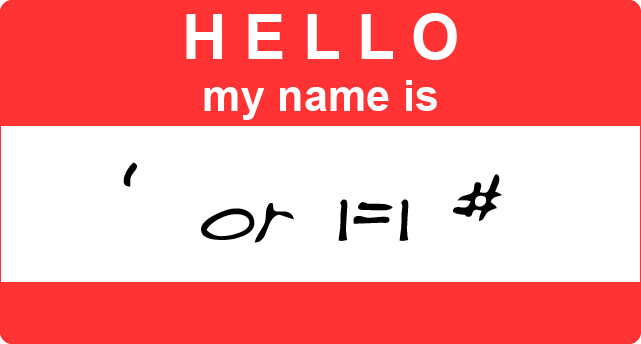

But I'm Afraid of Needles!
SQL Injection
April 4, 2016
In today's world where we're constantly bombarded about news of hackers accessing all types of supposedly secure databases on a global scale, it's hard to know where to begin when trying to secure your dynamic website. One of the easiest things to defend against is the type of attack known as 'SQL Injection'.
What is SQL Injection? To explain, maybe it will help to explain the name. SQL is the most-widely used language that is used specifically to access and manipulate databases. When you enter a search term, or fill out a form, whatever you type in makes its way into a SQL statement that is used to access the database and retrieve or manipulate the data you want.
For example, let's say you are looking up a classmate on your college's online alumni directory. Your college's database uses the following SQL statement to access student information on their database:
select * from students where last_name = INPUT_NAME;
Where INPUT_NAME is whatever last name you typed into the online form. For example, you type in 'Clinton', and submit the form. 'Clinton' gets substituted for INPUT_NAME and the resulting statement is:
select * from students where last_name = 'Clinton';
This SQL statement is issued to the database, which returns all the information it has on anybody with the last name of Clinton.
Suppose that instead of 'Clinton', you typed in the very weird-looking
' or '1'='1
including the single-quotes. This would get translated into:
select * from students where last_name = '' or '1'='1';
See how tricky that is? The SQL statement is transformed, and now returns student information for anyone whose last name is '' (no one), or for anyone for whom '1' = '1'. Well, '1' = '1' is always true, so this statement will return the student information for all students. This is pretty innocuous, but what if we typed in
a'; drop table students; select * from credit_card_info WHERE 't' = 't
This would get translated into:
select * from students where last_name = 'a'; drop table students; select * from credit_card_info WHERE 't' = 't';
The 'drop table' statement would have the effect of deleting the entire 'students' table, and the 'select * from credit_card_info' statement would return all the available credit card info. Now that's an injection to be afraid of!
Fortunately, SQL Injection is one of the easiest attacks to protect against. The two most common ways to protect against SQL Injection are Prepared Statements and Escaping.
Prepared Statements are available in every flavor of SQL. They define beforehand what the type of the input is, and the input can't be treated any other way. So if a Prepared Statement is expecting a string for 'last_name', the Prepared Statement will treat it only as a string and only after it's started executing.
Escaping means transforming all characters with special meaning to SQL to something safe, before the SQL statement is sent to the database. When the user input is received by the server, it transforms all strings first by escaping special characters, and only then does it create the SQL statement before sending it to the database. In the examples above, the attack depends on the interpretation of a single quote as such. To escape a single quote, you simply double it up -- make it two single quotes. This will cause SQL to process the statements properly.
PROVIDE LINK << Previous Post | Blog Home | PROVIDE LINK Next Post >>